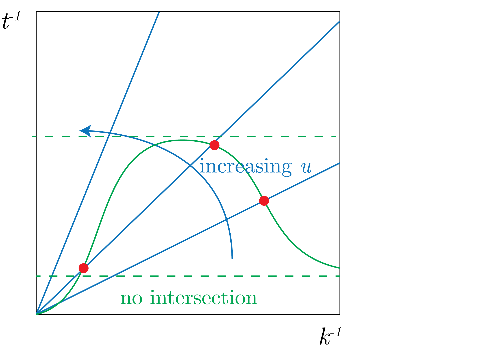

Below is a description of the waves that we will be considering in this lecture, in Fig. 1.
Fig. 1: (a) The resting, linear wave (b) The turbulent, non-linear ocean.
The picture that we are looking at in the ocean is presented in Fig. 2.
Fig. 2: The scenario we are considering in this equation.
Rossby Waves Review
We have the following set-up for linear Rossby waves:
\begin{align}
\partial_b + wN^2 &= 0, \\
\partial_t q + \beta v &= 0,
\end{align}
where $b = f \partial_z\psi$, which gives:
\begin{equation}
q = \nabla^2\psi + \beta y + f_0^2 \partial_z\left[\frac{1}{N^2}\partial_z\psi\right].
\end{equation}
Theb, we assume a solution of the form:
\begin{equation}
\psi = \psi_0\exp\left[\text{i}(kx + ly - \omega t)\right],
\end{equation}
and then we get, for $F = f_0^2 / N^2$ and $K^2 = k^2 + l^2$, we have:
\begin{equation}
K_m = m\pi\left(\frac{f_0}{ND} \right).
\end{equation}
The solution for the 1st baroclinic Rossby wave speed is then given by:
\begin{equation}
c_{R_1} = - \frac{\beta}{K^2 + \left( \pi f / N D \right)^2}
\end{equation}
We note that the wavelength is $2 \pi / L$ and we make the long-wave approximation $L \gg (N D / f)$.
The doppler shifted Rossby Wave speed is given by:
\begin{equation}
u_d = u - c_{R_1},
\end{equation}
and we can see this from linearizing conserved PV about a zonal mean (see Q1 and Q3 in 12.802.PS3)
Interaction of waves and turbulence in a simple model
The setup for this model looks like Fig. 3.
Fig. 3: The scenario we are considering in the 1.5 layer model.
The equations of motion that we are consideration is:
\begin{equation}
q_1 = \nabla^2 + \beta y - \tilde{F}\psi_1,
\end{equation}
and then we have that $\psi_2 = 0$, which gives the name for 1.5 layer model.
We are interestin in matching the timescale.
To do this, we consider the particle velocity of QGPV $u_{rms}$, then the timescale is:
\begin{equation}
ku_{rms} \sim \text{ inverse time scale},
\end{equation}
Then, we know that the rossby wave dispersion relation is:
\begin{equation}
\omega_{rossby} = \frac{k\beta}{K^2 + k_d^2}.
\end{equation}
So, to match these values, we can see how to do this in the following figure, Fig. 4.

Fig. 4: Time matching $ku_{rms} \sim \omega_{rossby}$.
In observational data, we can change when there is an intersection of these two timescales.
At the intersection, we get that the turbulence generates zonal jets and Rossby waves.